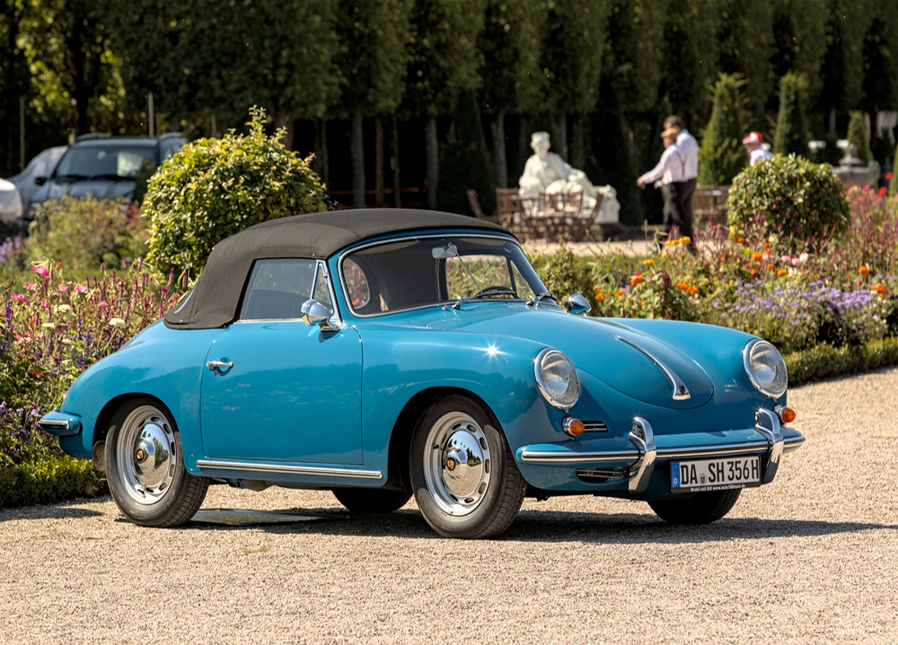

Porsche 356

El Porsche 356, producido entre 1948 y 1965, fue el primer modelo de producción de Porsche. Este icónico
deportivo es conocido por su diseño aerodinámico, rendimiento excepcional y el uso extensivo de la ingeniería
ligera, estableciendo la base para el éxito futuro de la marca.